Clinical Medicine and Surgery I · Exam 2 · Class of 2028
81 conditions from the Common Ophthalmological Disorders lecture
Use the Download as PDF button, top right, to keep this offline — it prints landscape with every row intact.
| Picture | Condition | Pain & side | Key exam abnormality | Vignette giveaway the words that hand it to you |
Presentation & exam findings | Testing & what causes it | Treatment & how fast | Patient education & prognosis |
|---|---|---|---|---|---|---|---|---|
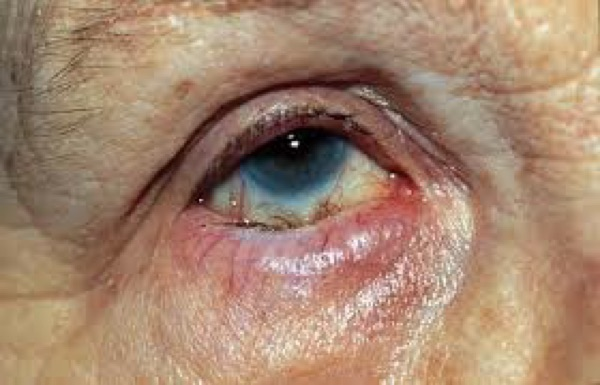 Slide 12 | EntropionEyelidL10 12–13 | No — irritation, foreign body sensationEither | Lid margin turns IN; lashes on the globe (trichiasis) | Lower lid margin turns IN · “foreign body sensation” · lashes touching the globe | Foreign body sensation with conjunctival injection. Inward-turning lid margin with lashes pushed onto the globe (trichiasis). | Slit lamp examination — the question is always whether the CORNEA has been involved. | Preservative-free artificial tears by day, lubricating ointment at night, tape the exposed lid. Surgery is definitive.Routine | The drops protect the surface; only surgery repositions the lid. |
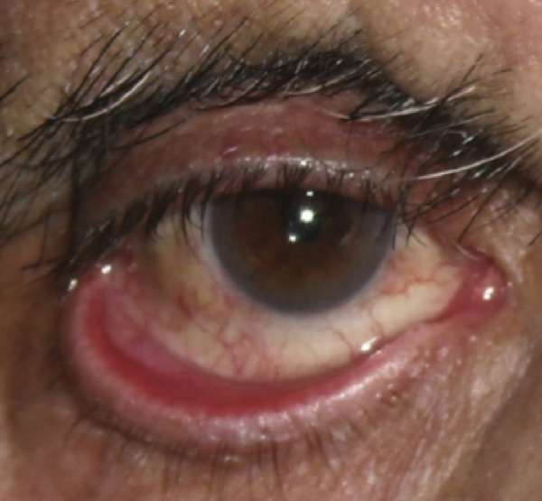 Slide 12 | EctropionEyelidL10 12–13 | No — tearingEither | Lid margin turns OUT; inner surface exposed | Lower lid margin turns OUT · “tearing” · inner lid surface visible | Tearing with conjunctival injection. Outward-turning lid margin exposing the inner surface. | Slit lamp examination for exposure keratopathy. | Same as entropion: tears by day, ointment at night, taping. Surgery is definitive.Routine | Ageing, scarring, congenital — and seventh nerve palsy causes ectropion only. |
| Slide 14 | DermatochalasisEyelidL10 14–15 | NoBilateral | Excess skin folds; visual field deficit | “Heaviness” of the lids · “looking through my lashes” · friction on blinking | Excess flaps or folds of skin, bilaterally. From ageing. | Examine the visual fields — a demonstrated deficit is what gets surgery covered. | Blepharoplasty.Routine | Often covered by insurance if a visual field defect is present. |
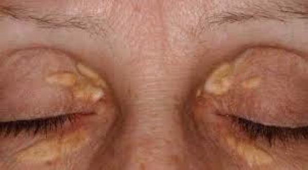 Slide 16 | XanthelasmaEyelidL10 16–17 | No — asymptomaticUsually bilateral | Oval yellow plaques, nasal lid | Oval yellowish plaques · typically asymptomatic · usually bilateral | Oval yellowish plaques on the lids. Asymptomatic. | Serum lipid profile, plus fasting glucose and haemoglobin A1C, plus liver function tests. | Treat the underlying metabolic issue. Local: cryotherapy, laser ablation, chemical peel, surgical excision.Routine | Recurrences are common even after effective local treatment. Many patients have normal lipids — the profile is still reasonable. |
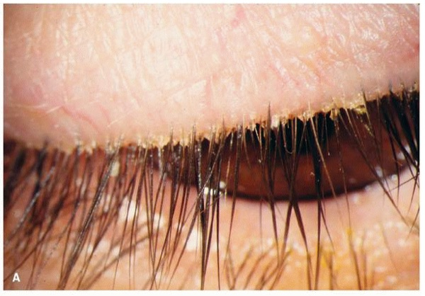 Slide 18 | Blepharitis / MeibomitisEyelidL10 18–19 | No — burning, grittinessBilateral | Crusting at the lash bases; toothpaste-like secretion | Crusting and scaling at the LASH BASES · toothpaste-like meibomian secretion · frothy tear film | Burning, dryness, grittiness, itching, foreign body sensation, tearing, mild redness. Erythematous swollen lid margins; decreased or frothy tear film. Skin findings of rosacea or seborrhoeic dermatitis. | Clinical. Associations: rosacea, seborrhoeic dermatitis, Staphylococcus aureus. | Lid hygiene first. No better after 2 weeks → topical antibiotics → then oral.Routine | Chronic — controlled rather than cured. Refer to ophthalmology if several weeks of treatment fail. |
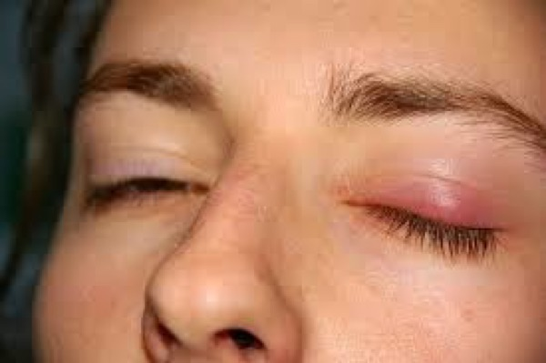 Slide 20 | ChalazionEyelidL10 20–21 | NO — non-tenderUnilateral | Nodule that points inside the lid | NON-tender lid nodule · builds over days to weeks · points INSIDE the lid | Focal eyelid swelling over days to weeks. Visible or palpable subcutaneous nodule, not tender. | Clinical. It is a STERILE obstruction of a meibomian gland. | Warm compresses with gentle massage. No spontaneous resolution → ophthalmology for steroid injection or curettage.Routine | Improvement may take months. Recurrent, or persisting beyond 2–3 months → refer to rule out sebaceous carcinoma. |
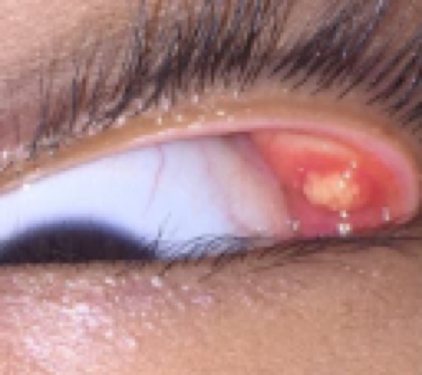 Slide 20 | Hordeolum (stye)EyelidL10 20–21 | YES — tenderUnilateral | Tender nodule at the lid margin | TENDER lid nodule · appears in 24 hours or overnight · at the lid margin | Eyelid pain, redness and swelling over 24 hours. Tender subcutaneous nodule. | Clinical. Acute infection, usually staphylococcal — meibomian gland (internal) or glands of Zeis or Moll (external). | Warm compresses with gentle massage. Persistent (no improvement in 2 weeks) → ophthalmology for incision and drainage.Routine | If pre-septal cellulitis develops alongside it, treat on the cellulitis pathway with systemic antibiotics. |
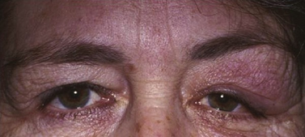 Slide 22 | DacryoadenitisLacrimalL10 22–23 | YESUnilateral (viral often bilateral) | Swelling outer ⅓ of the UPPER lid + preauricular node | Swelling over the LATERAL ONE THIRD of the UPPER lid · ipsilateral preauricular node | Unilateral pain, redness and swelling over the outer upper lid; tearing or discharge. Hyperaemic palpebral lobe of the lacrimal gland. May have preauricular lymphadenopathy, temporal injection, fever, leukocytosis. | Contrast computed tomography of orbits and sinuses when indicated — not automatic. Inflammatory is most common; bacterial rare; viral usually bilateral. | Inflammatory → corticosteroids. Viral → cool compresses. Cause unclear → empiric oral antibiotics 24 h then reassess. Analgesia as needed.Urgent | Do not start corticosteroids until infection is reasonably excluded. Inflammatory disease should respond within 48 hours. Monitor for orbital involvement. |
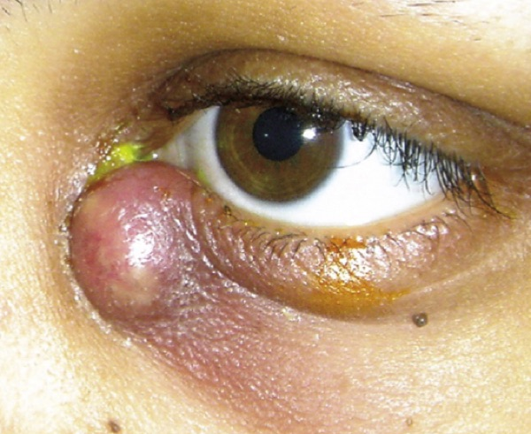 Slide 24 | DacryocystitisLacrimalL10 24–25 | YESUnilateral | Swelling below the medial canthal tendon; pus from the punctum | Swelling over the NASAL aspect of the LOWER lid, BELOW the medial canthal tendon · pus from the punctum | Red, painful, swollen mound over the lacrimal sac at the inner lower lid; tearing, fever. Erythematous tender tense swelling. Mucoid or purulent discharge expressible from the lower punctum. | From nasolacrimal duct obstruction. Contrast computed tomography reserved for suspected orbital extension, abscess, trauma, mass or atypical disease. | Well, afebrile, reliable → oral antibiotics 10 days. Febrile, ill or unreliable → admit, intravenous 48–72 h then oral to complete 10–14 days. Warm compresses; consider drainage of an abscess.Urgent | Improvement expected in 24–48 hours. Afterwards, probing and irrigation are often needed to check the drainage system; surgery may follow. A mass ABOVE the tendon suggests a lacrimal sac tumour. |
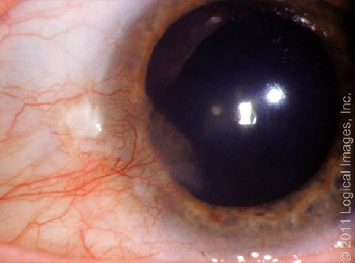 Slide 27 | PingueculaSurfaceL10 27–28 | No — irritationEither | Yellow nodule that stops at the limbus | Yellowish nodule at 3 or 9 o’clock · does NOT touch the cornea | Irritation, redness nasally or temporally, tearing. Classic appearance, almost always at 3 or 9 o’clock, not involving the cornea. | Clinical. From chronic sunlight and wind exposure. | Sun, dust and wind protection; lubricating drops.Routine | Conservative management will not make it resolve. “Pterodactyls fly into the cornea; penguins can’t.” |
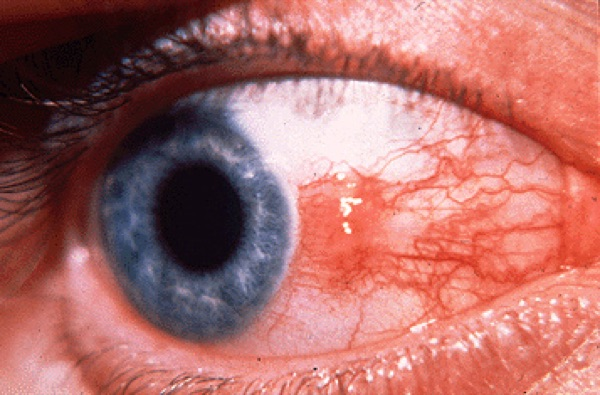 Slide 27 | PterygiumSurfaceL10 27–28 | No — irritationEither | Wing of tissue crossing onto the cornea | Triangular insect-wing growth · EXTENDS ONTO THE CORNEA · “surfer’s eye” | As pinguecula, but the growth crosses the limbus onto the cornea. Can decrease vision. | Slit lamp to assess the integrity of the adjacent cornea. | Sun protection and lubricating drops. Surgery if it grows into the cornea and distorts vision.Routine — refer non-urgently if growing or vision affected | Conservative care controls symptoms only. Protect from sun, dust and wind. |
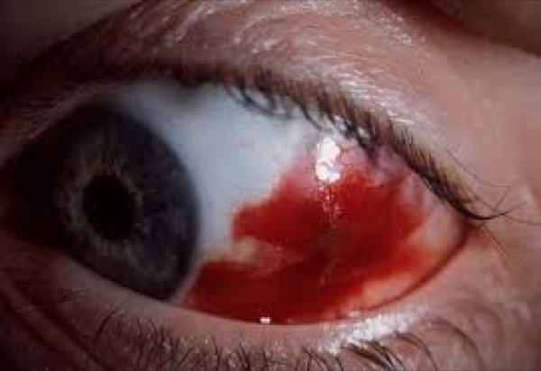 Slide 29 | Subconjunctival haemorrhageSurfaceL10 29–30 | NO — absentUnilateral | Blood under the conjunctiva; vision, pupil and cornea all normal | Bright red patch, PAINLESS · vision, pupil and cornea all normal · after a cough or strain | Red eye, often asymptomatic unless chemosis is present. Blood underneath the conjunctiva. | History is the workup. Check the blood pressure if there is no explanation. Ocular examination. | Reassurance. Artificial tears if mildly irritated. Treat the underlying bleeding disorder or hypertension.Routine | Resolves spontaneously in 2–4 weeks. Recurrent with no culprit medication → medication review, blood pressure, targeted haematologic evaluation — not an automatic referral. |
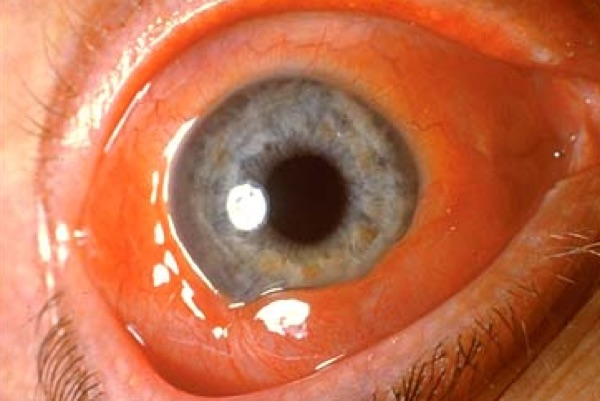 Slide 31 | ChemosisSurfaceL10 31 | Varies with the causeEither | Swelling of the conjunctiva itself | Swelling of the conjunctiva itself · a sign, not a diagnosis | Conjunctival oedema. Non-specific sign of irritation: allergy, infection, thyroid eye disease, angioedema, trauma, orbital cellulitis, impaired orbital venous drainage. | Look for what is causing it. | Treat the cause.URGENT if with proptosis, restricted movement, reduced vision or an afferent pupillary defect | On its own it means irritation. With those four accompaniments it means something is filling the orbit. |
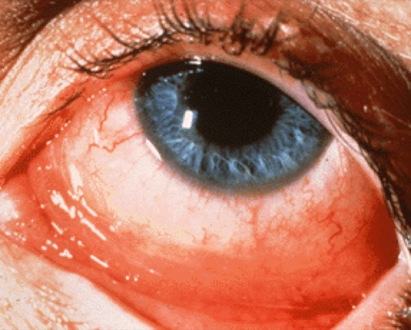 Slide 34 | Allergic conjunctivitisConjunctivitisL10 34–35 | No — ITCHBilateral | Papillae (“like a strawberry”), chemosis, no node | ITCH · bilateral · watery or stringy discharge · no preauricular node | Diffuse hyperaemia, itchy eyes, swollen lids, watery or stringy discharge. Bilateral. Vision preserved. Chemosis, conjunctival papillae, no node. | Clinical. Papillae (red at surface, paler at base) → bacterial or allergic. | Avoid the allergen; cool compresses, artificial tears, topical histamine blocker ± mast cell stabiliser (olopatadine does both), systemic antihistamine.Routine | Symptoms often settle as allergen levels fall. If topical treatment fails, the diagnosis may be wrong — refer. |
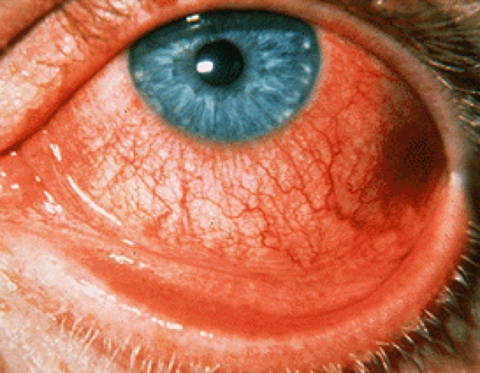 Slide 36 | Viral conjunctivitisConjunctivitisL10 36–37 | No — uncomfortable, tightBilateral (starts in one eye) | Follicles + TENDER preauricular node + watery discharge | Profuse WATERY discharge · FOLLICLES · TENDER preauricular node · one eye then the other · recent cold | Diffusely red conjunctiva, considerable tearing, swollen tight lids but no pain. Bilateral, often starting in one eye. Follicles especially inferiorly. | Clinical. Follicles (pale at surface, redder at base) → chlamydial or viral. | Cool compresses, artificial tears. Contagious precautions and hand hygiene.Routine — refer if >3 weeks, or photophobia or vision loss after onset | Self-limiting, but often WORSE over the first week, resolving in 2–3 weeks. Highly contagious. |
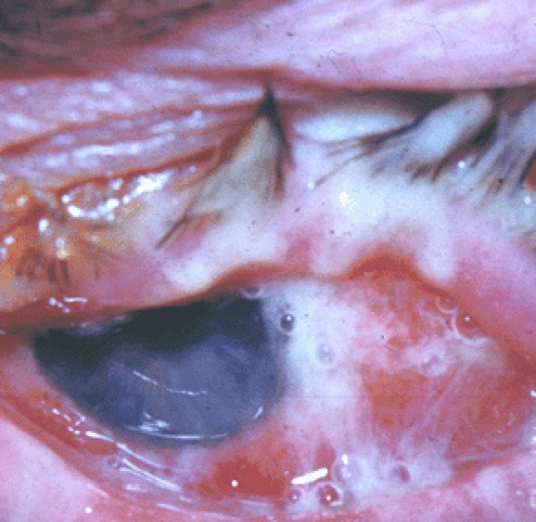 Slide 40 | Bacterial conjunctivitisConjunctivitisL10 40–41 | Soreness rather than painOften UNILATERAL | Papillae + thick yellow discharge, usually no node | Thick yellow or white discharge · often UNILATERAL · lids stuck together · usually no node | Diffusely red conjunctiva, thick discharge, soreness. Florid hyperaemia and chemosis, papillae, mild to moderate purulent discharge. | Clinical. Risk: immunocompromised, elderly, paediatric, contact lens wearers. | Immunocompetent adult → topical broad-spectrum antibiotic (e.g. fluoroquinolone). Contagious precautions.Routine — URGENT if immunocompromised, contact lens wearer, recent surgery, foreign body, corneal opacity, or no improvement in 24 h | Prompt and total response is expected in a normal host. Poor response → refer. |
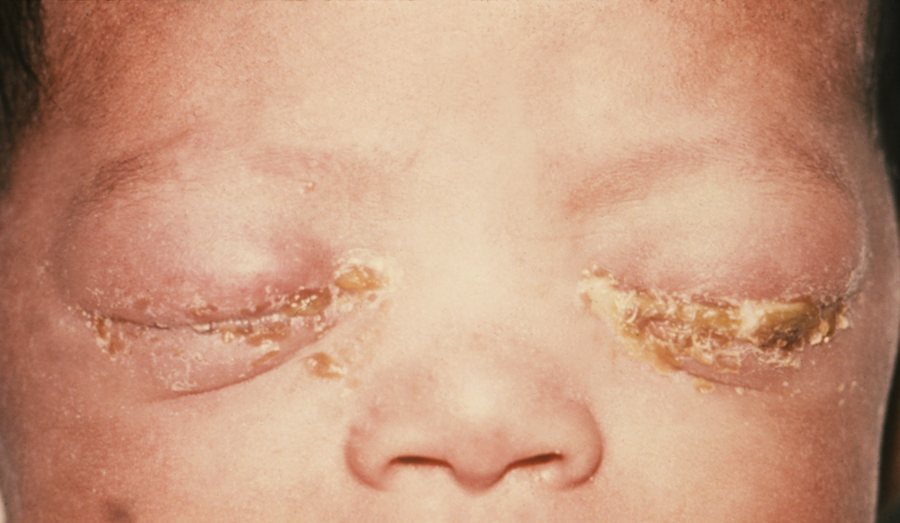 not on a slide — CDC / J. Pledger, Public Health Image Library #3766 · public domain | Gonococcal conjunctivitisConjunctivitisL10 40–41 | YES — severeEither; neonate often bilateral | Severe purulent discharge WITH a palpable preauricular node | SEVERE purulent discharge WITH a palpable preauricular node · neonate | The exception to the no-node rule in bacterial disease. In neonates, the major concern. | Cultures and Gram stain; test for chlamydia and disseminated infection. | Newborn: hospitalise, systemic ceftriaxone once, specialty consultation.EMERGENT | Untreated risk is corneal perforation. |
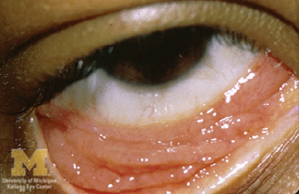 Slide 42 | Chlamydial conjunctivitis — adult inclusionConjunctivitisL10 42–43 | NoUnilateral, sometimes bilateral | Follicles, chronic beyond a month, topical treatment failed | CHRONIC — a month or more · stringy mucoid discharge · follicles · has not responded to topical medication | Chronic hyperaemia of the lower palpebral conjunctiva. Unilateral, sometimes bilateral. Often a concurrent asymptomatic urogenital infection. | Conjunctival nucleic acid amplification testing, or direct fluorescent antibody stain of a scraping. Serotypes D–K. | Doxycycline 100 mg orally twice daily for 7 days.Routine | Avoid the sun; full glass of water, stay upright, separate from antacids and iron, calcium or magnesium. Evaluate for other sexually transmitted infections and notify partners. |
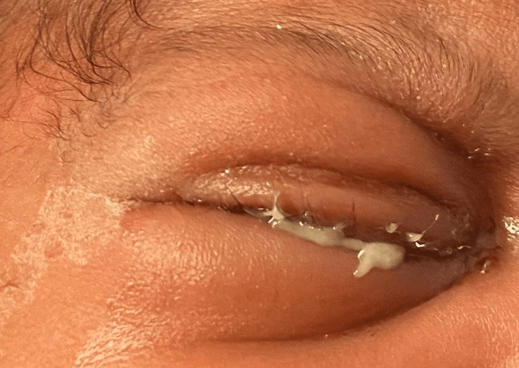 not on a slide — Nwokeji I, Ding K, Ketner S, Cureus 2024;16(7):e64463 · CC BY 4.0 | Chlamydial conjunctivitis — neonatalConjunctivitisL10 44 | —Bilateral | Neonate; may also have pneumonia | Neonate · maternal cervical infection · may also have pneumonia | Direct inoculation with infected genital secretions. Serotypes D–K. | As above. Assess for pneumonia. | Erythromycin 50 mg/kg/day divided four times daily for 14 days. Azithromycin 20 mg/kg daily for 3 days is an alternative with more limited data.Urgent | Monitor infants under 6 weeks for infantile hypertrophic pyloric stenosis — erythromycin is a motilin receptor agonist. Often treated in hospital because of concomitant pneumonia. |
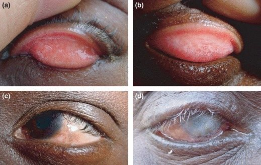 not on a slide — Hu VH and colleagues, Trop Med Int Health 2010;15(6):673–91 · CC BY 2.5 | TrachomaConjunctivitisL10 45–46 | Mostly asymptomaticBilateral | Upper lid follicles, then scarring, entropion, trichiasis | Poor sanitation · repeated childhood infections · scarred upper lid · lashes turned in | Most active cases are asymptomatic. If symptomatic: red eye, foreign body sensation, purulent discharge, follicles especially of the upper eyelid. | Serotypes A, B, C. The leading infectious cause of blindness worldwide. | Mass drug administration: azithromycin 1 g orally as a single dose where prevalence is ≥5%. Trichiasis requires surgery.Urgent | Treatment is usually curative but reinfection is common without better hygiene. Chain: inflammation → lid scarring → entropion → trichiasis → blindness. |
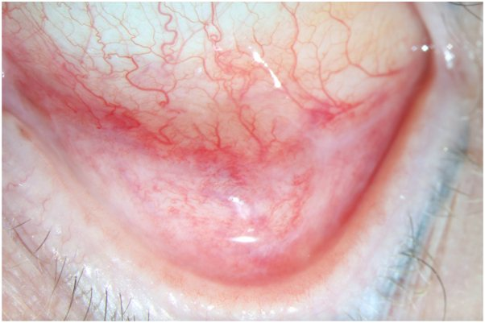 not on a slide — Nguyen CDT, Cao J, Dominguez AR, JAAD Case Rep 2025;64:95–99 · CC BY 4.0 | Autoimmune conjunctivitisConjunctivitisL10 38–39 | Minimal or none, and no dischargeBilateral | Recurrent redness with systemic complaints | Recurrent or chronic redness · minimal pain, NO discharge · systemic complaints | Diffuse hyperaemia, often recurrent. Malaise, fever, fatigue. Systemic autoimmune disease usually already identified. | Associated with ocular mucous membrane pemphigoid, Stevens-Johnson syndrome, Sjögren disease, graft-versus-host disease. | Managed by ophthalmology alongside the systemic disease.Routine | Ocular response depends on the underlying disorder. |
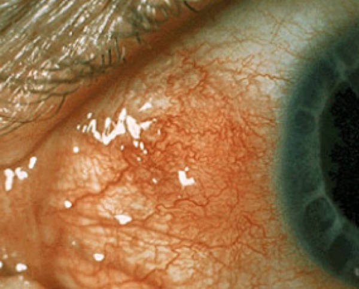 Slide 47 | EpiscleritisScleraL10 47–48 | MILDUnilateral (may recur in either eye) | Sectoral redness; vessels MOVE; blanch with phenylephrine | MILD ache · sectoral redness · no discharge, no photophobia · vessels MOVE | Acute-onset mild pain and focal redness. Often sectoral. Episcleral vessels can be moved slightly with a cotton-tip applicator after anaesthesia. | 2.5% phenylephrine, wait 15 minutes — the vessels BLANCH. Often idiopathic, often no systemic association. | Artificial tears and an oral non-steroidal anti-inflammatory taken WITH FOOD.Routine — refer if no response in 2 days | Usually self-limited, resolving over 2–3 weeks. May recur in the same or the other eye. |
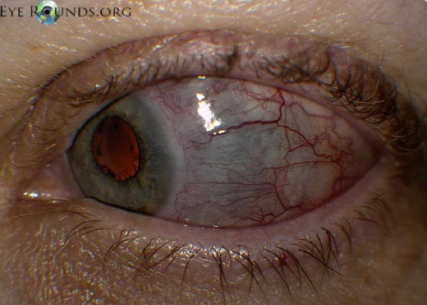 Slide 49 | ScleritisScleraL10 49–50 | SEVERE, boring, WORSE AT NIGHTUnilateral | Violaceous hue; vessels do NOT move; pain on eye movement | SEVERE BORING pain, WORSE AT NIGHT, radiating to the face · VIOLACEOUS hue · vessels do NOT move | Severe deep pain radiating to face and periorbital region, often with diffuse hyperaemia. Characteristic violaceous hue — choroid showing through thinned sclera. Pain with eye movement. | Slit lamp and ophthalmoscopy. Work up the underlying systemic condition — often autoimmune. | Non-infectious anterior disease commonly begins with systemic anti-inflammatories; systemic corticosteroids and immunomodulators for severe, necrotising, posterior or refractory disease.SAME DAY — sclera at risk of perforation, may need a surgical patch | Decreased PAIN is the first sign of response, even if the inflammation looks unchanged. Perforation risk is greatest in necrotising disease. |
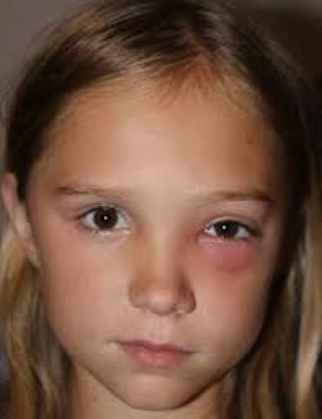 Slide 52 | Pre-septal (periorbital) cellulitisOrbitL10 51–53 | YES — periocularUnilateral | THE EYE ITSELF IS WHITE; movements full and painless | Swollen red lid but THE EYE ITSELF IS WHITE · movements full and painless · vision normal | Periocular pain, fever, chills, warmth. Diffuse balloon-like oedema, erythema and tenderness of lids and periorbital tissue; variable conjunctival injection. | Direct extension from bacterial sinus, skin or dental infection. Contrast computed tomography when orbital involvement cannot be excluded — not automatic in clearly pre-septal disease. Complete blood count, blood cultures, wound Gram stain. | Mild → outpatient oral antibiotics 10–14 days against Staphylococcus (including resistant strains) and Streptococcus.Urgent — admit if moderate-severe or toxic, poor compliance, child ≤5 years, or no improvement on orals | Expect improvement in 24–48 hours. In diabetic, elderly or immunocompromised patients consider fungus. |
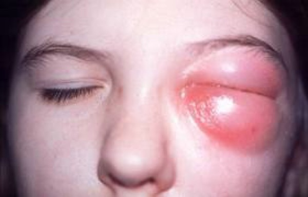 Slide 52 | Post-septal (orbital) cellulitisOrbitL10 51–53 | YES, and pain ON EYE MOVEMENTUnilateral | PROPTOSIS, restricted painful movement, ± afferent pupillary defect | THE EYE ITSELF IS RED · PROPTOSIS · painful restricted eye movement · diplopia · reduced vision | All the pre-septal features plus significant conjunctival injection, proptosis, decreased and painful extraocular movement, possible afferent pupillary defect and decreased vision. | Contrast computed tomography of orbits and paranasal sinuses. Complete ocular examination with fundoscopy, cultures, complete blood count, blood cultures. | Hospitalise — broad-spectrum intravenous antibiotics 48–72 h, then oral for at least a week. May need ear-nose-throat, oral and maxillofacial surgery, or infectious disease consults.EMERGENT | Untreated → intracranial spread → meningitis or cavernous sinus thrombosis. |
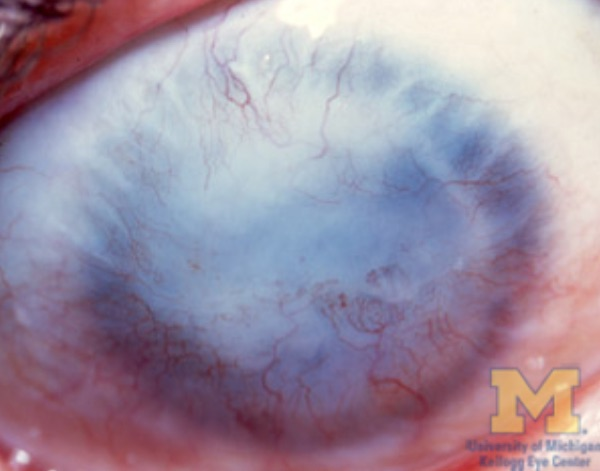 Slide 55 | KeratitisCorneaL10 54–56 | YESUnilateral | Corneal opacification, CILIARY FLUSH, “broken up” light reflection | Contact lens overwear · corneal opacification · “broken up” corneal light reflection · CILIARY FLUSH | Eye pain, foreign body sensation, tearing, photophobia, redness especially at the corneal edge, blurred vision. Opacification of the cornea. | Slit lamp with fluorescein. Risks: corneal trauma, dry eyes, contact lens overwear, topical ocular corticosteroids. Classic ring infiltrate = Acanthamoeba, in lens wearers who rinse lenses in tap water. | Treat the underlying cause to prevent persistent inflammation and scarring, guided by ophthalmology.SAME DAY — urgent referral within 24 h | Undertreated → corneal scarring or perforation → endophthalmitis → possible removal of the eye. Prognosis is worse for ulcers inside the visual axis. |
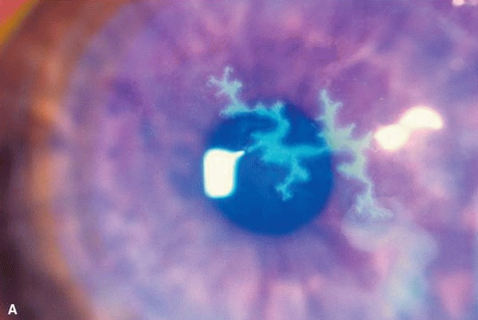 Slide 57 | Herpes simplex keratitisCorneaL10 57–59 | YESUnilateral | Dendrite with TERMINAL END BULBS on fluorescein | TRUE DENDRITE — tree-branching, elevated edges, TERMINAL END BULBS · younger patient · rash not dermatomal | Painful red eye with photophobia. Fluorescein under cobalt blue shows the classic dendrite. Facial vesicles lack a dermatomal distribution and may not respect the midline. | Fluorescein staining. The true dendrite is pathognomonic for herpes simplex. | Oral antivirals (aciclovir, valaciclovir, famciclovir) for 10 days.SAME DAY | NO TOPICAL GLUCOCORTICOIDS BY THE PRIMARY PROVIDER in active epithelial disease. Benign and self-limited, but recurrences are common under physical or emotional stress. |
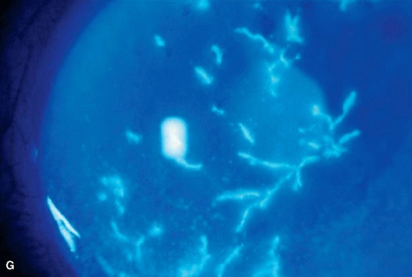 Slide 57 | Herpes zoster keratitisCorneaL10 57–59 | YES — and skin painUnilateral, dermatomal V1 | Pseudodendrite (no end bulbs); Hutchinson sign | PSEUDOdendrite — no branch pattern, no elevated edges, no end bulbs · older patient · dermatomal V1 rash respecting the midline | Pain, paraesthesia or discomfort in the affected skin, possibly preceded by headache, fever, malaise. Vesicles characteristically unilateral, often sparing the lower lid. Rash may precede ocular involvement by days to months. | Fluorescein staining. Hutchinson sign — vesicle on the tip of the nose → nasociliary involvement → higher ocular risk. | Oral antivirals for 10 days, ideally within 72 hours of rash onset. Intravenous aciclovir for severe, disseminated, orbital, retinal, central nervous system or significantly immunocompromised disease.SAME DAY | Recurrences common; postherpetic neuralgia can be devastating. Prevention: recombinant zoster vaccine at 50+, and 19+ if immunocompromised. |
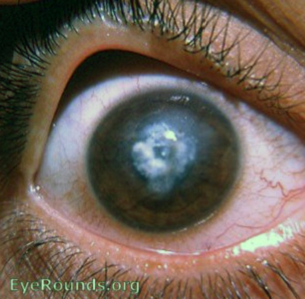 Slide 60 | Corneal ulcerCorneaL10 60–61 | YES — resists opening the eyeUnilateral | White corneal infiltrate + ciliary flush | Patient RESISTS OPENING the eye · white spot on the cornea · contact lens wearer · ciliary flush | Painful eye, reluctance to open it from photophobia or foreign body sensation, tearing, blurred vision, red eye. Corneal defect. | Slit lamp and fluorescein. Swab central or large ulcers for culture. Contact lens use is the major risk factor. | Broad-spectrum topical agent (fourth-generation fluoroquinolone) to start; then agent-specific therapy per ophthalmology.EMERGENT | Steroid drops can worsen the infection if started too early, especially fungal or herpetic — leave that decision to ophthalmology. Next-day follow-up; most heal in 2–3 weeks; may need a transplant if severe. |
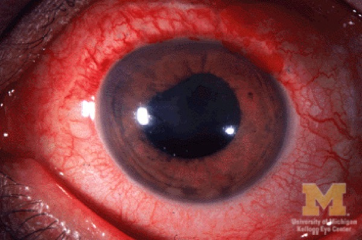 Slide 62 | Anterior uveitis (iritis, iridocyclitis)UveaL10 62–63 | YESUnilateral | CONSENSUAL photophobia, ciliary flush, IRREGULAR pupil, cells in the anterior chamber | CONSENSUAL photophobia · ciliary flush · irregular pupil stuck to lens or cornea · cells in the anterior chamber | Eye pain, redness especially at the corneal edge, photophobia. Vision often preserved. Variable pressure. Keratic precipitates — white cell deposits on the corneal endothelium. | Slit lamp and dilated fundoscopy. Idiopathic or autoimmune. | Infectious → treat the organism. Non-infectious → topical corticosteroids.SAME DAY — urgent within 24 h, because delay may cost vision | Most acute cases respond dramatically within days to weeks. Recurrent disease, or systemic features, needs a thorough systemic evaluation. |
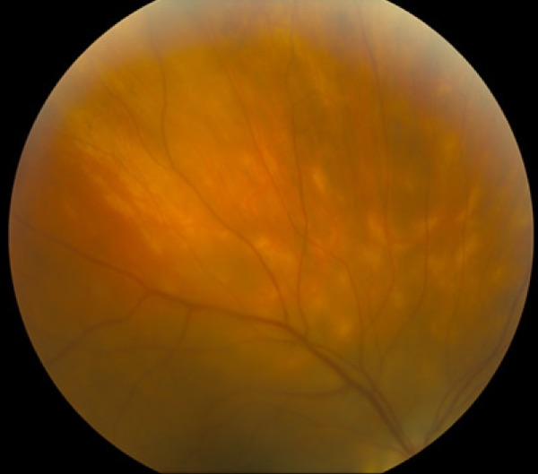 Slide 64 | Posterior uveitis (choroiditis, retinitis)UveaL10 64–65 | NO if isolatedEither | Cells in the vitreous, vitreous haze, floaters | NO PAIN · floaters, scotomas, metamorphopsia · cells in the posterior vitreous · vitreous haze | Blurred vision, floaters, scotomas, distortion of straight lines. No pain if isolated. Inflammation of retina or choroid. | Slit lamp and dilated fundoscopy; possibly fluorescein angiography to separate active from inactive lesions. Idiopathic, autoimmune, or infectious — toxoplasmosis, cytomegalovirus. | Does NOT respond to topical treatment — may require an intraocular corticosteroid injection.Urgent | Develops far more slowly than anterior disease and may last several years. Infection must be excluded before immunosuppression. |
| no image on the slide | Amaurosis fugaxAcute vision lossL12 4–8 | NO — painlessUsually unilateral | Transient curtain; everything is normal by the time you see them | Transient monocular curtain · seconds to minutes · then full recovery | “Fleeting blindness.” Mild blurring or fogging through to complete blackness, in part or all of the field. Painless. Lasting hours argues against a transient ischemic attack. | Carotid Doppler if carotid suspected · echocardiogram if cardiac · MRA (magnetic resonance angiography) for everyone. | Treat the underlying cause. Aspirin and clopidogrel for stroke risk; carotid endarterectomy for carotid emboli; calcium channel blockers for vasospasm.Urgent | A transient ischemic attack is a major warning that a stroke is coming. About 85% recover fully; the rest progress to a central retinal artery occlusion. |
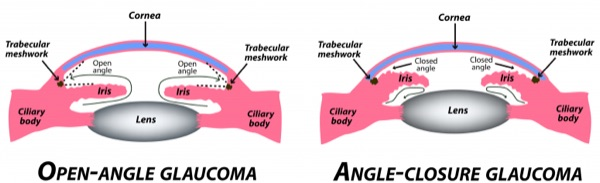 Slide 12 | Acute angle-closure glaucomaAcute vision lossL12 9, 13–14, 16–17, 20 | YES — severe and suddenUnilateral | HAZY CORNEA, mid-dilated pupil, intraocular pressure 40–80, coloured halos | Severe pain + headache + vomiting · coloured halos · hazy cornea | The iris blocks the drainage circuit and pressure rises dramatically. Severe sudden eye pain, decreased vision, halos around lights, headache, nausea and vomiting. May present as an intractable headache behind the eye. | Tonometry or gonioscopy — intraocular pressure 40–80 mmHg. Pupillary dilation, hazy cornea, narrow or occluded angle. | Topical pilocarpine or timolol; IV acetazolamide then mannitol or isosorbide. Definitive: laser peripheral iridotomy, 1–2 days after onset.Emergent | Systemic anticholinergics and nebulized bronchodilators can precipitate it. Permanent blindness without prompt treatment. |
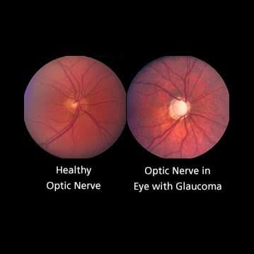 Slide 19 | Chronic open-angle glaucomaAcute vision lossL12 9, 15–16, 18–19, 21 | NO — painlessBilateral | OPTIC NERVE CUPPING, bayoneting, splinter haemorrhages; peripheral field lost first | Asymptomatic · “tunnel vision” · optic nerve cupping | Trabecular meshwork abnormality by the canal of Schlemm, from ageing. Asymptomatic in most patients. Peripheral field is lost first, then central. Painless. | Tonometry or gonioscopy — pressure may be normal OR elevated. Optic nerve: increased cup-to-disc ratio, rim pitting, bayoneting, splinter haemorrhages, rim thinning. | First-line latanoprost, tafluprost or timolol drops. Laser trabeculoplasty if refractory or advanced. Surgery is definitive.Routine | A leading cause of blindness worldwide. Found by annual eye examinations, because patients have no symptoms. Some remain on drops for life. |
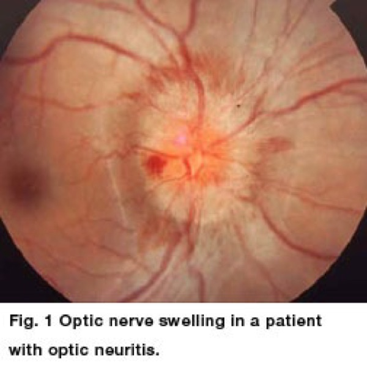 Slide 23 | Optic neuritisAcute vision lossL12 22–24 | YES — on EYE MOVEMENTUnilateral | Relative afferent pupillary defect, loss of colour vision, often a normal disc | PAINFUL EYE MOVEMENT · loss of colour vision · young woman | 18–45 years, 75% female. Unilateral loss over hours to several days, with pain on eye movement and often central vision loss. Inflammation from multiple sclerosis, autoimmune disease, postviral or idiopathic. | Slit lamp, dilated fundoscopy, colour vision assessment and neurological examination. MRI brain AND orbits, with and without contrast. Disc often normal-appearing; relative afferent pupillary defect. | Corticosteroids if a demyelinating cause is found. At least 2 demyelinating lesions → neurology or neuro-ophthalmology.Urgent | Spontaneous recovery is the rule — usually normal within a year. Recurrence raises the risk of multiple sclerosis, so find the cause. |
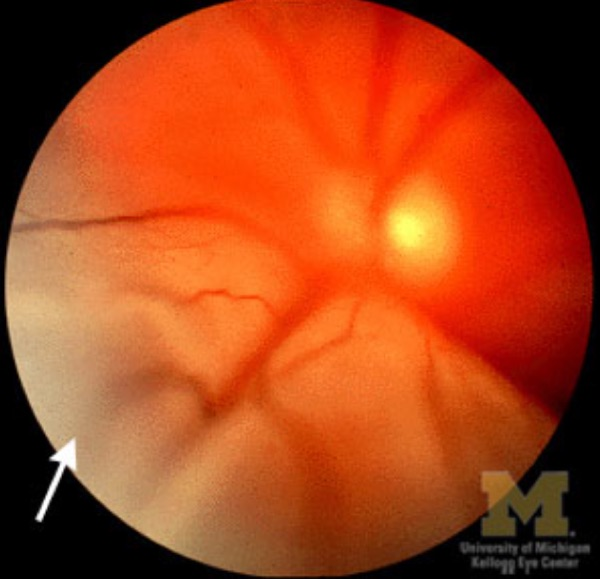 Slide 28 | Retinal detachmentAcute vision lossL12 25–30 | NO — painlessUnilateral | Elevated grey retina with folds; flashes and floaters first; changes with head position | Flashes and floaters, then a curtain that STAYS · painless | Traction detachment after a retinal tear or hole. Grey or black peripheral shadows that may cover the eye within days. If the macula is involved, sudden loss of vision. The deficit changes with head position. | Direct and dilated ophthalmoscopy: elevated grey retina with folds, pigmented well-demarcated area, orange crescent-shaped tears. Ultrasound is more sensitive than fundoscopy and types it. | Refer immediately. Surgery urgently or within a week by type: laser photocoagulation, cryotherapy, pneumatic retinopexy, vitrectomy, scleral buckle.Emergent | Most common after age 50. Risks: myopia, trauma, cataract extraction, diabetes, connective tissue disease. Flashes and floaters mean a tear — get seen. |
| no image on the slide | Central retinal artery occlusion (CRAO)Acute vision lossL12 36–40 | NO — painlessUnilateral | CHERRY-RED SPOT on a pale retina; pupil slow direct, brisk consensual | Painless profound loss over SECONDS · CHERRY-RED SPOT | An embolus blocks the central retinal artery — a stroke in the eye. Acuity from counting fingers to light perception, with an island of vision in the temporal field. Pupil slow to direct light, brisk consensually. | Pale swelling of the posterior segment with a cherry-red spot at the fovea; emboli visible in the artery. Colour fundus photography and fluorescein angiography. | High-concentration inhaled oxygen and digital massage, IV acetazolamide, anterior chamber paracentesis, and thrombolytic into the ophthalmic artery within 8 hours.Emergent | Irreversible damage after 90 minutes. Stroke risk rises at onset — plaque reaching a retinal artery means far more remains in the carotid. |
| no image on the slide | Branch retinal artery occlusion (BRAO)Acute vision lossL12 41 | NO — painlessUnilateral | Sectoral pallor in one arterial territory; partial field loss | Painless loss of a WEDGE of field · sectoral pallor | The same disease as CRAO with the blockage in a branch vessel, so only part of the retina is affected and the field loss is partial and localised. | As for CRAO, with the findings confined to one arterial territory. | As for CRAO — the management does not change.Emergent | The only difference from the central form is where the blockage sits. |
| no image on the slide | Central retinal vein occlusion (CRVO)Acute vision lossL12 31–34 | NO — painlessUnilateral | “BLOOD AND THUNDER” — disc swelling, venous dilation, cotton wool spots | Painless loss · “BLOOD AND THUNDER” fundus | A thrombus occludes the central retinal vein. Sudden and painless, though in some patients loss develops gradually over days to weeks. More common than CRAO. | Disc swelling, venous dilation, cotton wool spots, retinal haemorrhages — the blood and thunder appearance. Confirm with colour fundus photography and fluorescein angiography. | Urgent ophthalmology referral to restore blood flow. Evaluate and treat the underlying disorders.Urgent | Neovascularization appears weeks to months after the occlusion. Risks are the clotting risks: hypertension, diabetes, hyperlipidaemia, hypercoagulable states. |
| no image on the slide | Branch retinal vein occlusion (BRVO)Acute vision lossL12 35 | NO — painlessUnilateral | Sectoral haemorrhage along one branch vein; partial field loss | Painless loss of PART of the field · sectoral haemorrhage | The same disease as CRVO with the clot in a smaller branch vein, affecting only part of the retina rather than the whole. | As for CRVO, with haemorrhage confined to the territory of one branch vein. | As for CRVO — urgent referral, and treat the underlying disorder.Urgent | Everything except the extent of the field loss is identical to the central form. |
| no image on the slide | Arteritic AION (giant cell arteritis)Acute vision lossL12 47, 49–51 | NO in the eye — but scalp tenderness and jaw claudicationOne eye first; second eye at risk | Swollen PALE disc; raised ESR and CRP; temporal headache in a patient over 55 | Over 55 · NEW temporal headache · scalp tenderness, jaw claudication | Anterior ischemic optic neuropathy caused by giant cell (temporal) arteritis. Sudden painless loss of side or central vision, with systemic malaise, weight loss, fever. Usually an elderly woman with no prior headache history. | ESR (erythrocyte sedimentation rate) and CRP (C-reactive protein) rule it in or out. Temporal artery biopsy is the gold standard. Disc is swollen and pale. | IV methylprednisolone ×3 days, then a slow oral taper to the lowest suppressive dose, typically 6–12 months. Add famotidine for ulcer prophylaxis. Do not wait for the biopsy.Emergent | Refer emergently any patient over 50 with sudden visual loss. Untreated it blinds; the second eye is at risk. Prognosis depends on how early steroids start. |
| no image on the slide | Non-arteritic AIONAcute vision lossL12 47–48, 50, 52 | NO — painlessOne eye first; second eye at risk | Swollen PALE disc on a small crowded “disc at risk”; markers normal | 40–60 · painless · “disc at risk” · normal markers | 90–95% of anterior ischemic optic neuropathy. Sudden painless loss of side or central vision, with a swollen pale disc. Linked to a small structural optic disc and to hypertension, diabetes, high cholesterol and sleep apnea. | A diagnosis of exclusion — the workup is identical to the arteritic form, to be sure there is no giant cell arteritis. Then evaluate for hypertension, diabetes and anaemia; neuroimaging if unclear. | Observation and cardiovascular risk factor modification. Consider avoiding antihypertensives at bedtime.Urgent | Nocturnal hypotension can worsen it, which is why the bedtime dose is moved. The second eye remains at risk. |
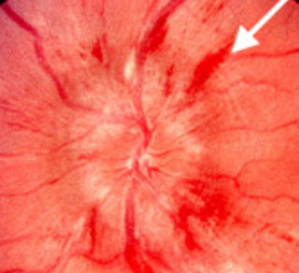 Slide 45 | PapilledemaAcute vision lossL12 42–46 | NO in the eye — but headacheBILATERAL | Disc pushed OUT with blurred margins and engorged veins; raised INTRACRANIAL pressure | BILATERAL swollen discs · headache, nausea, vomiting · INTRACRANIAL pressure | Swelling of the optic disc from raised intracranial pressure — not intraocular. Non-specific visual change: flickering, blurry, double vision. Causes: tumour, trauma, intracranial infection, haemorrhage, vitamin A toxicity. | Ophthalmoscopy: engorged retinal veins, swollen optic disc, ± haemorrhages. MRI and/or CT head to rule out a mass, then lumbar puncture — increased opening pressure confirms. | Treat the underlying disorder.Emergent | Papilledema pushes the disc OUT; glaucoma cups it IN. Acute has haemorrhages and cotton wool spots; chronic does not; the atrophic phase means the axons have died. |
| no image on the slide | Relative afferent pupillary defect (Marcus Gunn)Neuro-ophthalmologyL11 25–26 | NOUnilateral | Swinging flashlight → BOTH pupils DILATE when the light reaches the affected eye | Swinging flashlight → BOTH pupils DILATE on the bad eye | An afferent defect, usually at the retina or optic nerve. Moving a bright light onto the affected eye makes both pupils dilate, because the perceived illumination has just dropped. | Swinging flashlight test. Pupils are equal at rest. | Treat the underlying retinal or optic nerve disease.Urgent | It is a sign, not a diagnosis — find what is damaging the nerve or retina. |
| no image on the slide | Horner syndromeNeuro-ophthalmologyL11 13, 15, 27–30 | NOUnilateral | Ptosis + MIOSIS + anhidrosis; hallmark is DILATION LAG; normal levator function | Ptosis + MIOSIS + anhidrosis · DILATION LAG | Damage anywhere along the three-neuron sympathetic chain; often idiopathic. Anisocoria is most evident in the first 4–5 seconds after dimming the lights. Anhidrosis may be absent depending on the level. | Dilute apraclonidine drops — ineffective in a normal pupil, they dilate the Horner pupil. Localise: 1st order brainstem or cord above T1; 2nd order Pancoast tumour; 3rd order carotid dissection. | Treat the cause. Levator function is normal, so the ptosis is mild.Emergent | Horner with neck pain, trauma or focal neurology is a carotid dissection until proven otherwise. |
| no image on the slide | Argyll Robertson pupilNeuro-ophthalmologyL11 19, 31–33 | NOBILATERAL | Small pupils: no light reaction, brisk near reaction — light-near dissociation | Small BILATERAL pupils · no light, brisk near | Bilateral miosis with light-near dissociation. Classically tertiary syphilis, with tabes dorsalis and sensory loss from posterior column involvement. | Test light and near responses separately. Lesion suspected in the pretectal area of the dorsal midbrain. | Treat the underlying syphilis.Urgent | The pupillary near pathway skips part of the light pathway’s route, which is why one can fail while the other works. |
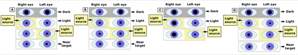 Slide 20 | Adie tonic pupilNeuro-ophthalmologyL11 34–37 | NO — may have photophobiaUsually unilateral | LARGE pupil, poor light response, slow tonic near response; sector paralysis | LARGE pupil · poor light, slow tonic near · sector paralysis | Inflammation damages the ciliary ganglion or short ciliary nerves, followed by aberrant reinnervation. Typically women in their 30s, often unilateral, and often asymptomatic; may have photophobia and blurred vision. | Slit lamp shows sector paralysis of the iris. Decreased regional corneal sensation. Absent Achilles or patellar reflexes in Holmes-Adie syndrome. | Reassurance; treat symptoms. Dilute pilocarpine constricts it through denervation supersensitivity.Routine | A large pupil that reacts poorly to light but slowly to near — the opposite pattern to Argyll Robertson. |
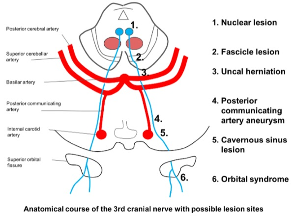 Slide 39 | Cranial nerve III palsyNeuro-ophthalmologyL11 39–41 | NO in itselfUnilateral | Ptosis + MYDRIASIS + impaired movement. Pupil INVOLVED → STAT angiography | Ptosis + MYDRIASIS · impaired movement · pupil involved = STAT | Most commonly microvascular (diabetes, hypertension). The dreaded cause is compression by an enlarging posterior communicating artery aneurysm, threatening rupture within hours to days. | Classified complete vs incomplete and pupil-involved vs pupil-spared. Pupil involved → STAT CTA head or MRA brain. Pupil-spared → imaging, but not STAT. | Depends on aetiology. Traumatic: observe about 6 months, patching in the interim.Emergent | Parasympathetic fibres run on the outside of the nerve, so compression reaches them first while microvascular disease spares them. |
| no image on the slide | Cranial nerve IV palsyNeuro-ophthalmologyL11 42–43, 46 | NOUnilateral | VERTICAL binocular diplopia; head tilted AWAY from the affected eye | VERTICAL binocular diplopia · head tilt AWAY from the bad eye | The trochlear nerve supplies the superior oblique, which intorts and depresses. Isolated palsy is most commonly congenital, even in adults; acquired causes are trauma, even mild, and microvascular disease. | MRI brain with and without contrast if isolated and atraumatic. Check haemoglobin A1C if at risk and not known diabetic. | Traumatic: observe about 6 months before corrective treatment; patch one eye meanwhile.Urgent | The only nerve arising from the dorsal brainstem, and it crosses — the left nucleus supplies the right eye. |
| no image on the slide | Cranial nerve VI palsyNeuro-ophthalmologyL11 44–46 | NOUnilateral | HORIZONTAL binocular diplopia; failure of abduction | HORIZONTAL binocular diplopia · failure of abduction | The abducens nerve supplies the lateral rectus. In children the most common cause is intracranial tumour, especially brainstem and posterior fossa; in adults, microvascular disease, or major trauma and skull base fracture. | MRI brain with and without contrast if isolated and atraumatic; haemoglobin A1C if at risk. | Traumatic: observe about 6 months; patch one eye in the interim.Urgent | A child with a sixth nerve palsy needs imaging — the base rate of tumour is what changes the threshold. |
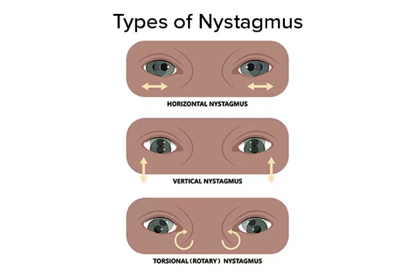 Slide 4 | NystagmusNeuro-ophthalmologyL11 3–5 | NO — vertigo and oscillopsiaBilateral eye movement | Involuntary rhythmic oscillation, named for the FAST beat; compensatory head position | Involuntary rhythmic oscillation · named for the FAST beat | Involuntary, biphasic, rhythmic, tremor-like oscillation. Congenital or acquired, and usually symptomatic unless acquired before age 8. Vertigo is often the primary symptom; also oscillopsia, blurring and compensatory head positioning. | Jerk nystagmus is classified by trajectory and increases with gaze toward the fast phase. Horizontal is the most common form. | Ophthalmology for a complete ophthalmic exam → imaging → labs if relevant. The underlying aetiology must be addressed.Urgent | Work up infants and young children, anything acquired in adolescence or adulthood, and concerning non-physiologic nystagmus in adults. |
| no image on the slide | Idiopathic intracranial hypertensionChronic vision lossL10 4–5 | YES — headache, pain behind the eyesBILATERAL papilledema | Papilledema with visual field loss; sixth nerve palsy | Overweight woman of childbearing age · pulsatile tinnitus · transient greyouts | Intractable headache of variable character, transient visual obscuration, intracranial noises, pain behind the eyes, mild pain on eye movement. | MRI brain with MR venography FIRST to exclude a mass and a venous sinus thrombosis, then lumbar puncture: elevated opening pressure. Ophthalmology for formal perimetry and optic nerve photography. | Acetazolamide promptly, plus a supervised weight reduction programme. Surgical CSF diversion (optic nerve sheath fenestration or shunt) only if medical therapy fails.Urgent | Weight loss is the only durable fix; medication covers the patient while that happens. Followed jointly by ophthalmology and neurology. |
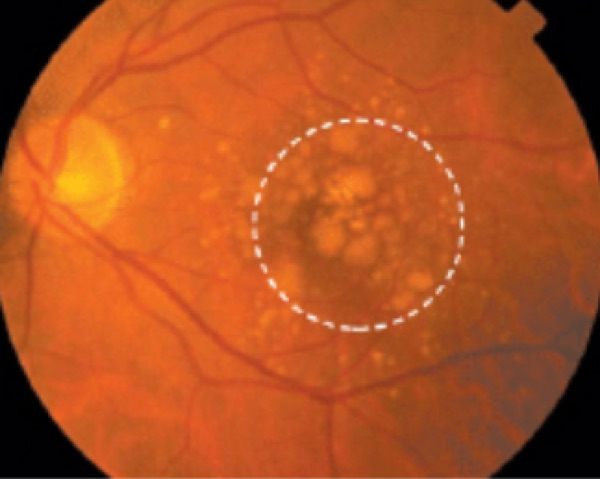 Slide 11 | Age-related macular degeneration — dryChronic vision lossL10 11, 14 | NOOften bilateral | Drusen, pigmentary change and atrophy; central scotoma | Central blur with distortion · drusen · gradual | 80% of cases. Blurred central vision with a central scotoma. Non-exudative: drusen, pigmentary change and atrophy. | Amsler grid for home monitoring and serial slit lamp examination. | STOP SMOKING. AREDS2 supplement: vitamins C and E, zinc, copper, lutein, zeaxanthin.Routine | Treatment slows progression but does not reverse vision already lost. The original AREDS used high-dose beta carotene, dropped because it raised lung cancer risk in smokers. |
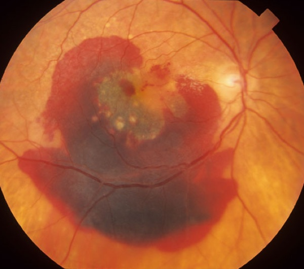 Slide 11 | Age-related macular degeneration — wetChronic vision lossL10 11, 14 | NOMay start unilateral | Choroidal neovascularisation with haemorrhage, then a disciform scar | Sudden worsening of a central blur · neovascular | 20% of cases. Exudative: choroidal neovascularisation bleeds into the retina and organises into a disciform scar. Rapid change on a background of dry disease. | As for dry, plus fluorescein angiography and optical coherence tomography. | Intravitreal anti-VEGF injection, thermal laser photocoagulation, photodynamic therapy.Same day | A sharp change in central vision in known dry disease means conversion to wet until proven otherwise. |
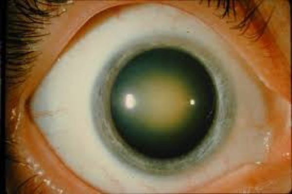 Slide 37 | Cataract — nuclearChronic vision lossL10 36–37 | NOUsually bilateral | Brown central lens; myopic shift, distance worse than near | Brown central lens · distance worse than near · myopic shift | Acquired, age-related. Central brown discoloration of the lens. Blurs distance more than near — a myopic shift, so some patients read without glasses again. | Early: slit lamp. Advanced: loss of the red reflex on ophthalmoscopy. | Surgery is the only treatment — lens extraction with implant, deferred until it interferes with daily activities.Routine | A cataract alone never causes a relative afferent pupillary defect. If one is present, something else is going on. |
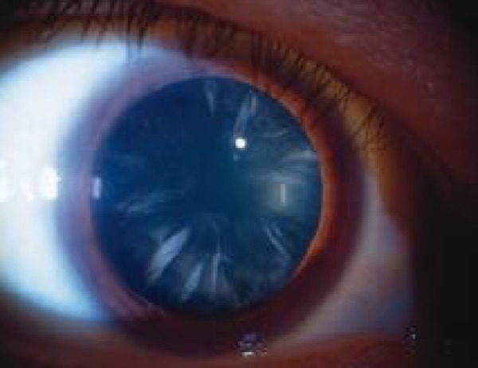 Slide 37 | Cataract — corticalChronic vision lossL10 36–37 | NOUsually bilateral | Spoke-like peripheral opacities; glare once central | Spoke-like peripheral opacities · GLARE once central | Radial spoke-like opacities from the lens periphery inward. Asymptomatic until the opacity reaches the centre, at which point glare is the commonest complaint. | Slit lamp examination; red reflex dulled when advanced. | Lens extraction when it interferes with function.Routine | Glare in bright sun or from oncoming headlights that was not there before is the history that matters. |
| no image on the slide | Cataract — posterior subcapsularChronic vision lossL10 36 | NOMay be unilateral | Plate-like posterior opacity; better after dilation; under 50 | Under 50 · steroids or diabetes · better after dilation | Plate-like opacity at the back of the lens. Glare and trouble reading, and characteristically symptoms improve once dilated. More rapid onset, classically under 50 years old. | Slit lamp: a dark shadow against the red reflex. | Lens extraction. Review the steroid burden where that is the cause.Routine | The one to suspect in a younger patient on corticosteroids or with diabetes. |
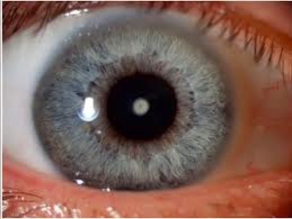 Slide 38 | Cataract — pediatricChronic vision lossL10 36, 38 | NOUni- or bilateral | Leukocoria or an absent red reflex; zonular is commonest | Zonular is commonest · leukocoria · may have nystagmus | Zonular: white opacity round the nucleus, the commonest paediatric type. Polar: less common but central, so caught earlier. Infants may be visually inattentive if bilateral; the affected eye may be smaller. | Red reflex screening in every infant. Dim, disrupted or absent reflex, or frank leukocoria. | Surgery is NOT deferred in a neonate — it is done early to prevent amblyopia.Emergent | An absent red reflex in a newborn is retinoblastoma or congenital cataract until proven otherwise. Both need ophthalmology now. |
| no image on the slide | MyopiaRefractiveL10 18 | NOUsually bilateral | Distance blur that corrects with a concave lens | Long eyeball · distance blurred, near clear | Excessive refractive power focuses distant objects in front of the retina. Family history and prolonged near work are risk factors; trauma displacing the lens forward can cause it. | Refraction. Refer isolated refractive error to optometry. | Concave (negative dioptre) lens — scatters light and moves focus back onto the retina.Routine | Blur that corrects fully with lenses is refractive; blur that does not is not. |
| no image on the slide | HyperopiaRefractiveL10 19 | NOUsually bilateral | Near blur that corrects with a convex lens | Short eyeball · near blurred | Insufficient refractive power focuses distant objects behind the retina. Caused by anything shortening axial length — trauma displacing the lens backwards, or a mass behind the globe. | Refraction, via optometry for isolated error. | Convex (positive dioptre) lens — converges light forward onto the retina.Routine | New hyperopia in an adult should prompt a thought about mass effect behind the eye. |
| no image on the slide | AstigmatismRefractiveL10 20 | NOUsually bilateral | Blur at all distances; toric lens corrects | Multiple focal points · blur at every distance | Uneven curvature of cornea or lens means no single point focus forms on the retina. Risk factors largely unknown. | Refraction. | Toric lens.Routine | Patients often assume everyone sees this way, because they always have. |
| no image on the slide | StrabismusChronic vision lossL10 25, 29 | NO in itselfOne eye misaligned | Cover test positive; displaced corneal light reflex | Binocular diplopia — gone when either eye is covered | Misalignment from disorder of brain, cranial nerves, neuromuscular junction or the muscles themselves. One eye fails to track or fixate; corneal light reflex displaced in larger deviations. | Cover test elicits fixation of the misaligned eye. Assess cranial nerves three, four and six. | Treat the cause; ophthalmology referral. Untreated in a child it causes amblyopia.Urgent | In an adult, new binocular diplopia needs a cause found. Pupil-involving third nerve palsy is an emergency. |
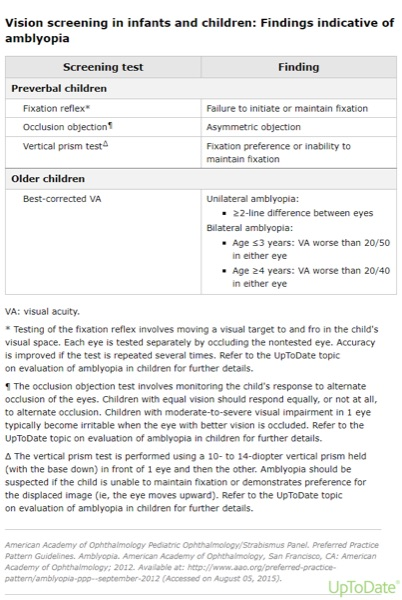 Slide 32 | AmblyopiaChronic vision lossL10 30, 32–33 | NOUsually unilateral | 2-line or greater acuity difference; objects when the GOOD eye is covered | Commonest cause of vision loss in children · unequal eyes | The brain favours one eye and the other fails to develop. Three routes: strabismus, anisometropia (unequal refraction), and deprivation (cataract, ptosis, corneal opacity). Affects 3–5% of children. | Occlusion objection test — the child objects when the GOOD eye is covered. Unilateral amblyopia is a 2-line or greater difference in best corrected acuity. Screen all children under 5. | Patch or atropinise the GOOD eye to force the weaker one to work. Treat the underlying cause.Urgent | Outcome is good treated before 7, better before 5. Corrected late, acuity can recover but stereo vision does not — these patients struggle with 3D and with judging distance. |
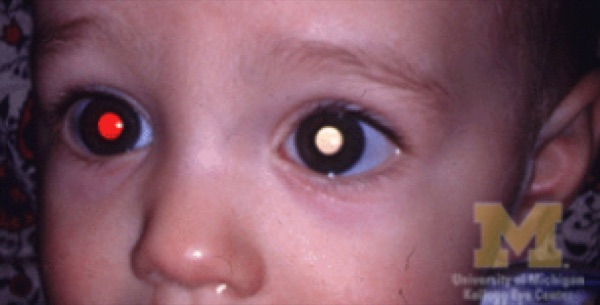 Slide 41 | RetinoblastomaOcular tumorsL10 41–42 | NOUni- or bilateral | LEUKOCORIA — white pupillary reflex | LEUKOCORIA in a young child · white pupil in photographs | Rare, almost exclusively young children, from a genetic mutation that is often recessive and so easily missed on family history. May present with poor vision or a turned eye. | Dilated examination plus imaging. NO BIOPSY — it risks seeding the tumour. Primary care contribution is the red reflex at every well-child check. | Multimodal therapy under ocular oncology, with genetic counselling. Enucleation for large tumours.Emergent | Untreated it is close to 100% fatal; treated, five-year survival is over 95%. No recurrence at five years counts as cured. Known family history: seen by an experienced ophthalmologist within the first 8 weeks of life. |
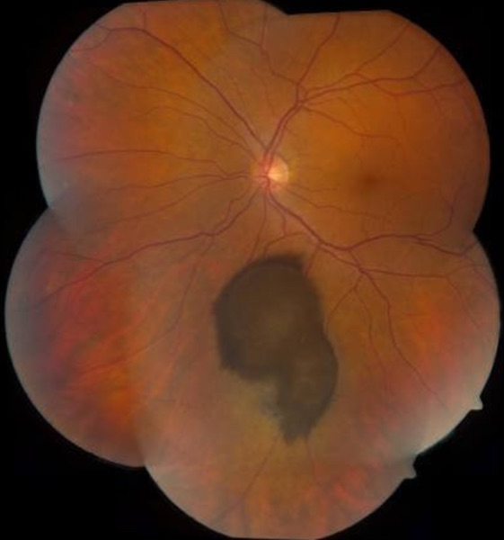 Slide 44 | Uveal melanomaOcular tumorsL10 44–46 | NO — usually asymptomaticUnilateral | Pigmented mass with a PROMINENT FEEDER VESSEL; >3 mm | Commonest eye cancer in adults · feeder vessel · usually found incidentally | From melanocytes of the choroid, ciliary body or iris — distinct from cutaneous and from conjunctival melanoma. Iris lesions: slow-growing dark or translucent mass, inferior half, unilateral, >3 mm base and >1 mm deep, may distort the pupil (corectopia). | Ophthalmology, then ocular oncology. Fine needle aspiration is for molecular prognostic testing, not to make the diagnosis. | Radiation therapy is now the commonest treatment; enucleation is less often needed.Urgent | The liver is the commonest site of metastasis. Ten-year mortality about 32% overall, but iris melanoma only 4–10% — it is visible, so it is found earlier. |
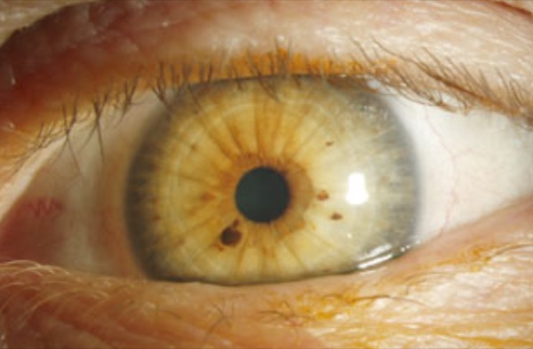 Slide 48 | Iris nevusOcular tumorsL10 48–49 | NOUsually unilateral | Flat, <3 mm, avascular, inferior iris | Flat, <3 mm, avascular · inferior iris · stable | A freckle of the iris, usually apparent around puberty. Asymptomatic, typically does not grow, flat or minimally elevated, not vascular. May distort the pupil. | Refer to ophthalmology to document and monitor; melanoma has to be excluded. | Surveillance. More frequent initially to establish it is not growing, then annual dilated review.Routine | The discriminators are growth, size and its own blood supply. A freckle has no feeder vessel; a cancer builds one. |
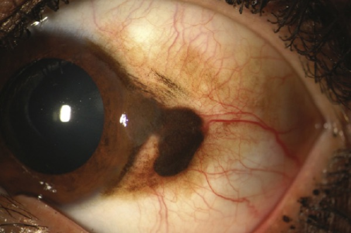 Slide 52 | Conjunctival melanomaOcular tumorsL10 52–54 | NOUnilateral | Raised and vascular; a nevus is flat with cysts | Raised and vascular pigmented conjunctival lesion | Distinct from uveal melanoma. A raised, often vascular pigmented lesion, in contrast to a conjunctival nevus, which is flat and characteristically contains clear cysts. | Ophthalmology referral for any pigmented conjunctival lesion that is growing. | Specialist management under ocular oncology.Urgent | Differentials include primary acquired melanosis (flat, patchy, can be premalignant) and racial melanosis (bilateral and symmetric). |
| no image on the slide | Open globe injuryOcular traumaL10 14 | YESUnilateral | Pupil distorted toward the wound; flat anterior chamber; soft eye | Pupil pulled toward a wound · soft eye · massive haemorrhagic chemosis | Full-thickness defect of cornea and/or sclera, so the intraocular compartments are open to the outside. Signs: pupillary distortion toward the wound, flat anterior chamber, extraocular protrusion of uveal tissue, massive haemorrhagic chemosis, soft eye, deep lid laceration, hyphema or vitreous haemorrhage. | CT orbit — NEVER MRI if a metallic foreign body is possible. Do not dilate the eye. Do not remove a penetrating object. | Rigid protective shield taped over the eye and ophthalmology called immediately. Antiemetics and analgesia so the patient does not strain, plus tetanus. Surgical repair.Emergent | Anything that raises intraocular pressure — vomiting, straining, pressing on the eye — can extrude intraocular contents. That is why the shield is rigid and the antiemetic is not optional. |
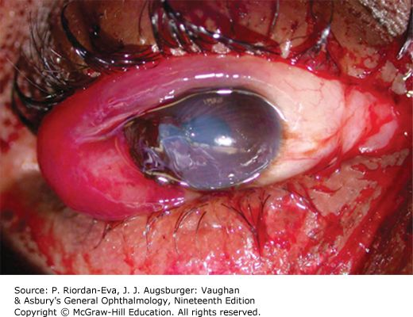 Slide 15 | Full-thickness eye wall lacerationOcular traumaL10 15–16 | YESUnilateral | Entry ± exit wound; opaque hydrated lens if the capsule is cut | Sharp object or high-velocity projectile · entry ± exit wound | Cut clean through cornea, sclera, or both, by a sharp object or high-velocity projectile — fishing hook, knife. The object may have been withdrawn before arrival, may be retained, or may have passed straight through. | CT orbit. Fundoscopy matters: a cut lens capsule leaves the lens hydrated, oedematous and opaque, and a fragment can extrude into the anterior chamber and inflame it. | Surgical repair. Lensectomy is required but is often deferred, to let hyphema and inflammation settle and to measure accurately for an intraocular lens. Posterior-segment foreign bodies are left alone at first assessment.Emergent | Leaving a posterior foreign body is deliberate, not an oversight — going after it early risks more damage than the object itself. |
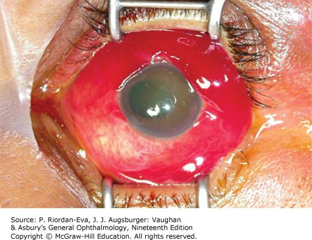 Slide 17 | Globe ruptureOcular traumaL10 17 | YESUnilateral | Massive haemorrhagic chemosis with a soft eye after blunt force | Blunt trauma — airbag, fist, baseball · soft eye | Cornea and/or sclera split at a weak point under severe blunt force. Common sites: posterior to the extraocular muscle insertions (especially the superonasal quadrant), old surgical incisions, and the lamina cribrosa. | Suspect it whenever blunt trauma produces massive haemorrhagic chemosis or a soft eye. CT to look for a foreign body. | Shield, ophthalmology immediately, antiemetics, analgesia, tetanus. Immediate surgical repair with wound exploration.Emergent | A previous cataract or other intraocular operation leaves a permanent weak point — those eyes rupture at lower force. |
| Slide 18 | Corneal abrasionOcular traumaL10 18 | YES — severe foreign body sensationUnilateral | Fluorescein uptake over the epithelial defect | Fingernail or contact lens · severe foreign body sensation | Scraping away of corneal epithelium. One of the commonest ocular injuries. Severe foreign body sensation, tearing, photophobia, blurred vision. | Slit lamp with fluorescein, which stains the exposed basement membrane and shows the extent. | Topical broad-spectrum antibacterial. Patching may ease pain. Re-examine periodically to confirm healing and exclude infection.Urgent | NEVER send the patient home with topical anaesthetic drops. They delay healing, mask worsening symptoms, and can cause a corneal ulcer. |
| Slide 21 | Corneal or conjunctival foreign bodyOcular traumaL10 21–22 | YESUnilateral | Vertical linear corneal scratches → object under the upper lid | Grinding or striking metal · vertical linear corneal scratches | An object with too little momentum to pass through the eye wall lodges in cornea or conjunctiva. Foreign body sensation, photophobia, excessive tearing. Linear vertical epithelial defects mean the object is under the UPPER LID. | Slit lamp for small objects; diffuse light for larger. Evert the upper lid — the vertical scratches are the clue to look there. | Topical anaesthetic, then removal with a sterile 27-gauge needle. A rust ring (iron or copper) comes out with a battery-operated burr. Broad-spectrum antibiotic plus abrasion care.Urgent | Refer if there is any concern the object passed through the cornea — that is an open globe, not a foreign body. |
| Slide 24 | HyphemaOcular traumaL10 24–25 | YESUnilateral | Layered blood in the anterior chamber | Blood layered in the anterior chamber after blunt trauma | Blood in the anterior chamber from injured vessels, after blunt or penetrating trauma. Blurred vision, eye pain, photophobia. Can be a sign of open globe. | Diffuse light for a gross hyphema, slit lamp, full ophthalmic examination. Measure intraocular pressure — unless penetrating globe injury is suspected. | Goal is preventing a rebleed: bed rest with the head elevated, antiemetics, ocular hypotensives, topical or oral corticosteroids, cycloplegic drops, and oral aminocaproic acid to stop clot breakdown. Treat a raised pressure.Emergent | Most rebleeding happens in the first 72 hours, and a secondary haemorrhage can cost the vision permanently. Avoid aspirin and antiplatelets; sickle cell disease raises the risk. |
| Slide 27 | Lid lacerationOcular traumaL10 26–27 | YESUnilateral | Cut through the lid margin or the tarsal plate | Cut at the lid margin or within 6–8 mm of the medial canthus | Full-thickness lid lacerations come with a corneal laceration or globe rupture in about two thirds of cases. Partial-thickness ones do not meet the referral criteria. | Examine for globe injury underneath. Determine whether the cut runs through the tarsal plate of the upper lid. | Ophthalmology for any of: lid margin involvement, within 6–8 mm of the medial canthus, lacrimal duct or sac, inner lid surface, associated ptosis, tarsal plate or levator. Partial-thickness can be repaired in the emergency department with ophthalmology follow-up in 2–3 days.Emergent | A missed canalicular injury in the medial third leaves the patient with chronic tearing for life. Facial lacerations may be left open 24 hours before closure because the face is so well vascularised. |
| Slide 32 | Orbital contusionOcular traumaL10 31 | YESUnilateral | Preseptal ecchymosis or haematoma, no haemorrhage within the orbit | Peri-orbital swelling without haemorrhage | Soft tissue swelling inside the orbit without haemorrhage. Preseptal ecchymosis or haematoma — the tarsal plate and septal margin act as a wall holding blood in the anterior tissues. | Assessment for globe injury; rule out brain trauma. | Supportive, through to surgery depending on the patient's condition.Urgent | The septum is what keeps this in front of the eye. Swelling that crosses behind it is a different and more dangerous problem. |
| Slide 34 | Periorbital haematomaOcular traumaL10 33 | YESUnilateral | Bleeding behind the septum, within the bony orbit | Bleeding within the orbit · not always traumatic | Bleeding inside the bony orbit, around the eye. Not only from accidental trauma — also orbit and eyelid surgery, peribulbar injections, orbital varices, lymphangiomas and arteriovenous malformations, anticoagulants, sickle cell disease, orbital pseudotumour and idiopathic causes. | Assess vision and intraocular pressure; imaging as the picture demands. | Canthotomy with cantholysis — releasing the lateral canthal tendon and cutting its inferior branch — to let the blood drain.Emergent | Because it is not always traumatic, ask about anticoagulants, recent injections and eye surgery before assuming a blow caused it. |
| Slide 38 | Retinal detachment — rhegmatogenousOcular traumaL10 35–36 | NOUnilateral | Curtain with flashes and floaters; retinal break on dilated examination | Curtain descending · flashes and floaters · commonest type | The most common type. One or more full-thickness breaks in the sensory retina let liquefied vitreous pass into the subretinal space. Usually preceded by posterior vitreous detachment. Shadow or curtain over the eye, cloudy or smoky vision, floaters, momentary flashes; monocular field defect, and acuity drops once the macula is involved. | History plus dilated eye examination by ophthalmology. | Surgical. Ophthalmology STAT, pain control, antiemetics, head of bed at 30–40 degrees.Emergent | Usually a spontaneous age-related event, but myopia, cataract surgery and ocular trauma all bring it forward. Must be seen within 24 hours. |
| no image on the slide | Retinal detachment — tractionOcular traumaL10 39 | NOOften bilateral disease | Concave, localised detachment with fibrovascular tissue | Proliferative diabetic retinopathy · concave and localised | Fibrovascular tissue pulls the retina off. Most commonly from proliferative diabetic retinopathy. More localised and concave in shape than a rhegmatogenous detachment; starts along the vasculature then spreads to retina and macula. | Dilated examination; the diabetic history is the context. | Surgical.Emergent | This is the one that follows from years of uncontrolled diabetes — the argument for glycaemic control has an endpoint the patient can picture. |
| no image on the slide | Retinal detachment — exudativeOcular traumaL10 39 | NODepends on the cause | Subretinal fluid with no break and no traction | No break and no traction · systemic disease or a tumour behind it | Fluid collects under the retina with neither a retinal break nor vitreoretinal traction. Associated with systemic vascular or inflammatory disease, or an intraocular tumour. | Dilated examination, then the workup the suspected underlying disease demands. | Treat the underlying condition — not primarily a surgical problem.Urgent | The only one of the three where surgery is not the answer. Finding the cause is the treatment. |
| Slide 42 | Orbital floor (blowout) fractureOcular traumaL10 40–43 | YESUnilateral | Diplopia on upward gaze with infraorbital numbness | Diplopia on UPWARD gaze · infraorbital numbness · fist or ball | Two mechanisms: a true blowout, where a blunt object raises orbital pressure and blows out the floor (commonest) or medial wall; or force on the infraorbital rim buckling the floor. Periorbital ecchymosis, lid oedema, chemosis, subconjunctival haemorrhage, infraorbital numbness, subcutaneous emphysema. Diplopia on upward gaze = inferior rectus entrapment; on lateral gaze = medial rectus. | CT of the orbits and midface. | No injury or entrapment: ice, analgesia, review in 2–3 days. Blood in the maxillary sinus: antibiotics. True blowout: ophthalmology, because 30% have a significant globe injury. Entrapment: facial trauma surgeon STAT — the muscle can necrose.Emergent | In children an entrapped muscle may show no soft tissue signs at all — the “white-eyed blowout”, with severe pain, bradycardia and vomiting on eye movement. Surgery is often delayed 1–2 weeks to let swelling settle. |
| Slide 45 | Basilar skull fractureOcular traumaL10 44, 47 | VariableOften bilateral raccoon eyes | Battle sign, haemotympanum, halo sign on the bedsheet | Raccoon eyes · Battle sign · clear or pink rhinorrhoea | Linear fracture of the skull base — cribriform plate, orbital plate of frontal, petrous or squamous temporal, sphenoid or occipital. Often no symptoms directly. Indirect signs: bleeding into soft tissue at the skull base, raccoon eyes, Battle sign, bleeding into middle ear or sphenoid sinus, haemotympanum, and cerebrospinal fluid leak with clear or pink rhinorrhoea. | CT orbits — though the fracture is not always visible. For suspected cerebrospinal fluid: a dextrose stick may be positive, and fluid on filter paper or a bedsheet shows a halo or double ring sign (inner blood, outer cerebrospinal fluid). | Cerebrospinal fluid leak: neurosurgery consult and admission. Admission otherwise turns on the clinical picture, associated injuries and any brain injury on CT.Emergent | Antibiotics for a cerebrospinal fluid leak are controversial — the concern is selecting resistant organisms. The halo sign is a bedside test that needs nothing but a bedsheet. |